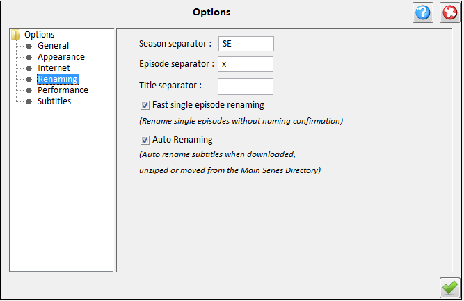

| Renaming Options |
|---|
|  |
|---|
In renaming options you can :
-
Set the template for renaming video and subtitles files.
There are 3 options:
- The season seperator [SS]
- The episode seperator [ES]
- The title seperator [TS]
After applying the template the name of the files will look like this:
Series Title[SS]Season[ES]Episodes Number[TS]Episodes Title
-
Fast single episode renaming.When Checked single episode renaming (By right clicking on
episodes table and choose rename) will rename the files according to the current
template options without showing the rename panel.
- Auto Renaming. When checked files will be renamed on downloading, unzipping or moving from
the Main Series Directory.
|